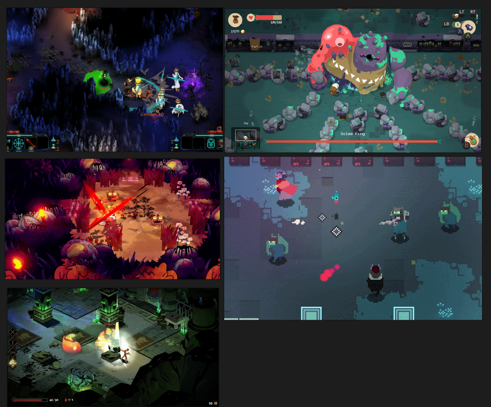
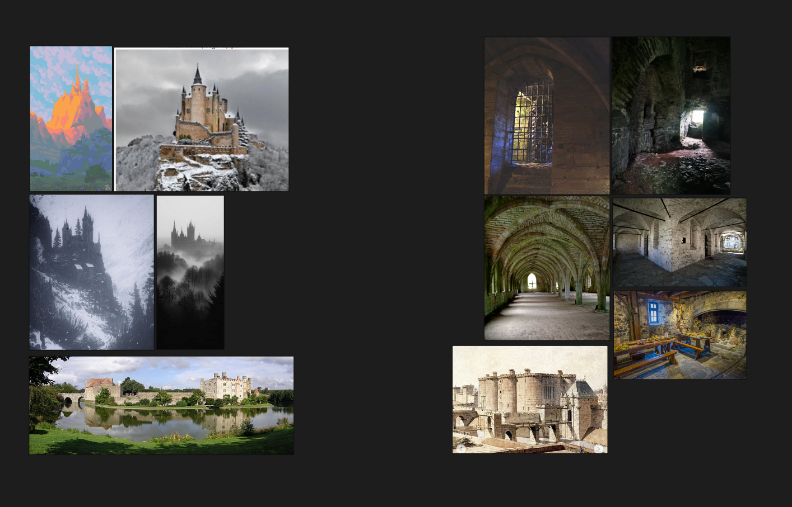
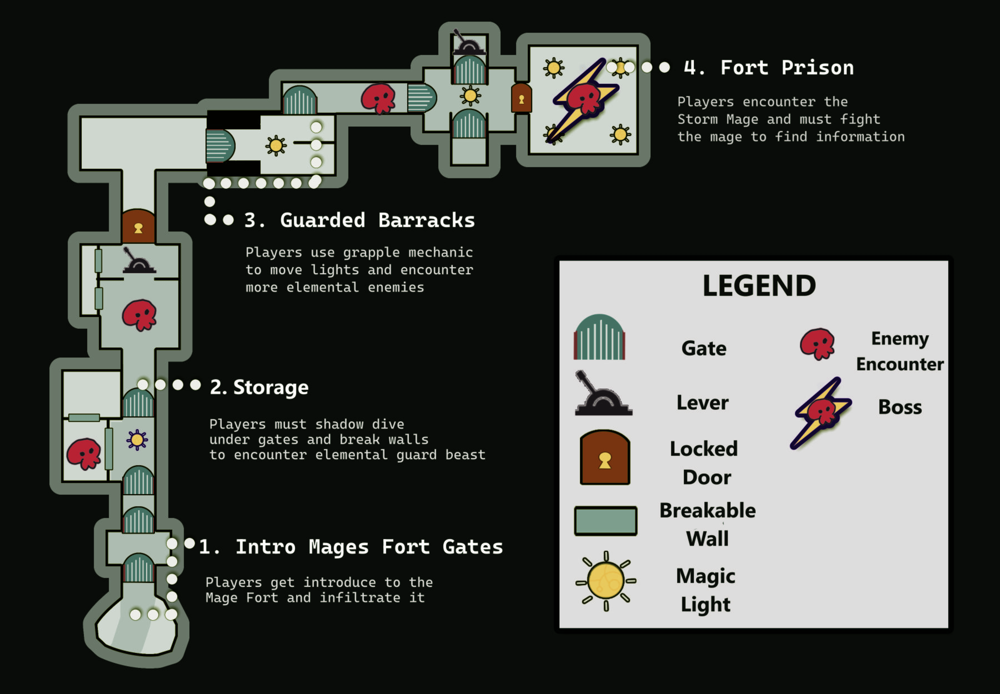

Shadow Sunder
Shadow Sunder is a top-down 2D action hack and slash demo, where you play as a warrior made of shadow to rescue the Queen of Shadows from the Mages of the High Order.
Player use the power of the shadow in abilities such as to pull enemies and objects closer to the player and able to dive into the shadow to squeeze through gaps and avoid enemy attacks.
Shadow Sunder is a 2025 Student Capstone Project to improve solo development and level design in making a short demo of a game within a time constraint.
Design Goals
I wanted to focus on this student project in making a short demo game to display in making game mechanics and level design all from scratch.
So I work in a weekly deadline in designing a game mechanic that involves with combat and level progression. I thought of the idea of focusing the game genre to hack and slash with a twist that the player can work with the level lighting system.
I took inspiration from hack and slash genres games such as Children of Morta, Bastion, and Hyper Light Drifter, Moonlighter, Cult of the Lamb, and Hades. To which I wanted to add a player mechanic that involves players being able to sink into the darkness and use the mechanics to avoid enemy attacks and go under gates or holes. How ever the player can't access this shadow dive ability if there are lights that are blocking the available path.
I also begin research onto fort and castle structures, textures, and elements to build my fantasy Mage Tower around as well draw in obstacles that involve player mechanics.
I then started plans on working with Unity, and using Krita and Piskel to make the art, UI, and animation assets. As well playing around with Audacity in making some sound effects.
Level Design
For the level, I wanted the gameplay to be roughly around 8 minute of playtime, as well an introduction to the game mechanics. With this project I wanted to push myself in designing short level that has couple of enemies, some light environment puzzles, and a boss fight.
I start sketching out top-down paper maps that would focus a mixture of navigational section based on the shadow diving mixed in with the hack and slash combat.

I would then start blocking out the level. This is where I face some design problems where the initial idea for the level will take gameplay time more than eight minutes and would re quire the player to spend most time backtrack through the level.

After the block outs, I set out to finalize the final level design to fit in the scope of shorter play time while keeping the core gameplay mechanics and uses.
Conclusion
Shadow Sunder was a great test in solo developing a single mechanical game, and continue to learn what design elements worked and what didn't worked. I learned to scope off unnecessary design elements and space from the game to focus showing of game mechanics and scripting a boss AI.
Gallery